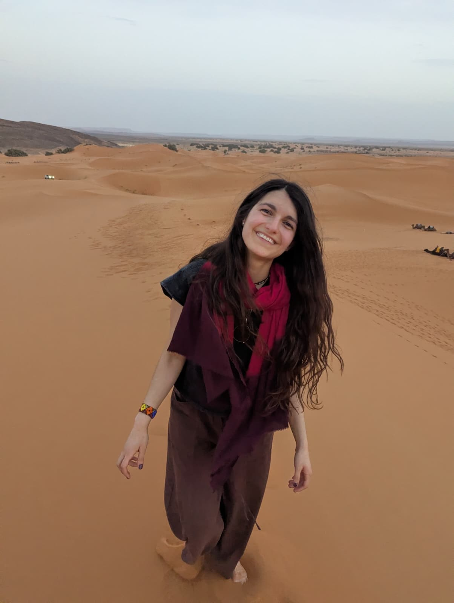

Planetary scientist
PhD Candidate in Astronomy
Leiden Observatory · Leiden University · Leiden, The Netherlands
I am driven by curiosity about how planets are built. My work combines Bayesian statistics and machine learning to uncover what giant (exo)planets are made of — probing their interiors and Love numbers to understand their formation and evolution.

I am a Colombian astronomer at heart, and I feel very lucky to spend my days asking questions about the Universe. I grew up in Colombia, where coffee, mountains and music were always part of everyday life — and where I first fell in love with the stars.
I did my undergraduate degree in Astronomy at the Universidad de Antioquia in Medellín, studied the interiors of giant planets during my Master's at Leiden University (Cum Laude), and I am now doing a PhD at Leiden Observatory, supervised by Dr. Yamila Miguel. My research uses Bayesian methods and machine learning to constrain the composition of giant (exo)planets and to probe their Love numbers.
Away from the telescope I'm a big coffee lover, an avid hiker, a cinephile, and I love poetry and dancing. I believe science — like good coffee and good music — is best when shared.
We know of thousands of worlds beyond our Solar System, and almost none look like our own. My work asks what these planets are made of: their interiors, their atmospheres, and what that tells us about how planetary systems form. Jupiter and Saturn are the laboratories we can study closest, and they anchor everything else.
Using Bayesian inference and machine learning to constrain internal composition, from gas giants to super-Earths, and to measure Love numbers that reveal how a planet deforms under tidal forces.
How does a planet respond to gravity? Love numbers encode this response — and can be extracted from the shape of a transit light curve.
Interpreting observations from JWST, the future Ariel mission, and the Voyager 2 mission to place our Solar System's giants in the wider context of exoplanetary systems.
An interactive overview of my studies, research stays, industry work experience, and the conferences where I have presented my work. Click a card to fly to its location.